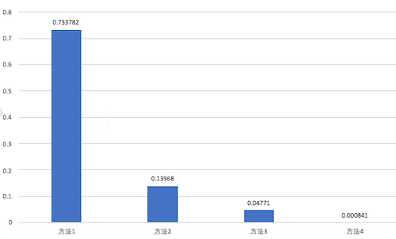

如何高效判断日期是否是同一天

Contents
很多同学都写过判断两个日期是否是同一天或者同一年这样的方法。方法需求很简单，直接使用系统库的方法来判断就可以了。近期做了这样的一个UI界面，所有图片通过拍摄时间以天为单位分成一个个大组，然后，再按拍摄地点分成小组；然后同一年的第一个section节头上要突出显示年份。但是，界面在首次滑动时，总有卡顿感。使用Xcode自带的 Instruments’ Time Profiler 测量了下时间，主要耗时居然是判断日期是否是同一天的方法。
判断日期是否是同一天的几个方法
卡顿必须要优化，于是在网上找到了这样几个判断日期是否是同一天的方法，如下：
格式成日期字符串后比较
1 2 3 4 5func isSameDay1(_ date1:Date, _ date2:Date) -> Bool { let formatter = DateFormatter() formatter.dateFormat = "yyyyMMdd" return formatter.string(from: date1) == formatter.string(from: date2) }取出日期的年月日比较
1 2 3 4 5 6func isSameDay2(_ date1:Date, _ date2:Date) -> Bool { let calendar = Calendar.current let d1 = calendar.dateComponents([.year,.month,.day], from: date1) let d2 = calendar.dateComponents([.year,.month,.day], from: date2) return d1.year == d2.year && d1.month == d2.month && d1.day == d2.day }使用Calendar的isDate(_:Date, inSameDayAs:Date)方法进行判断 这个方法是最简单的，直接使用系统库的方法，不用写其他代码
1 2 3func isSameDay3(_ date1:Date, _ date2:Date) -> Bool { return Calendar.current.isDate(date1, inSameDayAs: date2) }笔者在试过这几个方法后，发现主要耗时还是在判断是否是同一天的方法上。没办法，图片分组时，必须要判断是否是同一天，这个方法是绕不过去的，于是硬着头皮找到另外一种判断是否是同一天的方法，如下：
直接通过天数来判断是否是同一天
时间戳是从1970年的1月1日开始的秒数。如果，两个时间戳相差超过一天，那它们肯定不是同一天；如果相差少于一天，则计算这两个时间戳在该时区的天数，比较天数是否相等。比如，在+0的时区，我们用时间戳直接除以864000，得到的整数就是天数，在+8时区，由于第一天开始的时间戳是 8*3600，所以我们计算天数的时候加上这个值就可以了。系统也给我们提供了这个方法secondsFromGMT()来获取不同时区与标准时区的时间戳差值。1 2 3 4 5 6 7 8 9 10func isSameDay4(_ date1:Date, _ date2:Date) -> Bool { let secondesPerDay:Int = 24 * 3600 let t1:Int = Int(date1.timeIntervalSince1970) let t2:Int = Int(date2.timeIntervalSince1970) if abs(t1 - t2) > secondesPerDay { return false } let offset:Int = Calendar.current.timeZone.secondsFromGMT() return (t1 + offset) / (secondesPerDay) == (t2 + offset) / (secondesPerDay) }
几种方法对比
在iPhoneX上执行了20000次比较，结果如下：
两个日期是同一天的比较结果：
两个日期不是同一天的比较结果：

从上面结果可以看出，方法4比前三个方法要好不少，尤其是要比较的两个日期不是同一天的情况下。方法3是系统API，其性能也比前两种方法好。
引申问题
既然判断同一天的方法如此高效，那是否能够用来判断两个日期是否是同一年呢？
同一天可以通过这个方法判断，是因为没有闰秒，也就是说一天总是3600*24秒（在实际当中是有闰秒的，但没有规律，POSIX的计时没有算闰秒），而一年的时间不是固定的365天，所以这个方法不能简单的套用。但是可以通过日期当前的年份数，再比较年份数就可以了。代码如下：
|
|
大致思路是，先将时间戳转换为该时区的天数，再通过每年365天猜测一个年份，算出该年份的天数，然后用实际天数减去猜测的年份的天数，计算出剩余的天数，如果剩余天数少于该猜测的年份的天数（365或者366）则退出循环，返回该猜测的年份 如果剩余天数大于该猜测的年份的天数（365或者366），则再对剩余的天数进行同样的处理。